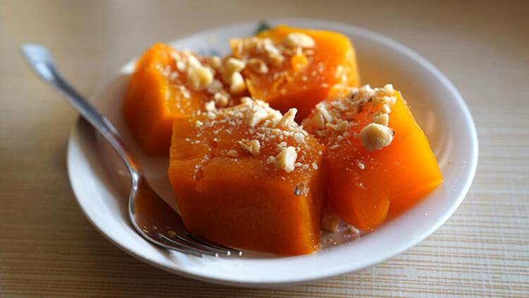

Kabak Tatlıs Tarifi
8-10 Kişilik 15dk Hazırlık, 25dk Pişirme
Tarihi Hikayesi
Her derde deva, kış aylarının en güzel lezzetlerinden olan kabak tatlısını yapmak için en güzel zamanlar bu zamanlar.
Faydalarını anlatmakla bitiremediğimiz, genellikle herkesin sevdiği ağızları sulandıracak bir lezzet.
Kabak tatlısının tercih edilmesinin bir diğer nedeni de kalorisinin diğer tatlılara göre düşük olmasıdır.
Üzerine serpeceğiniz cevizle lezzetini zirvelere taşıyacak olan balkabağı tatlısını denemediyseniz hemen denemelisiniz.
Tatlıların şahı olan balkabağı tatlısı tarifimizi denemeyi ve tarifini defterinize eklemeyi unutmayın. Deneyeceklere şimdiden afiyet olsun.
Kabak Tatlısı Tarifi İçin Malzemeler
- 2 kg balkabağı
- 3 su bardağı toz şeker (kabağın cinsine göre değişir, tatsız ise daha fazla şeker eklenebilir)
- 1 su bardağı dövülmüş ceviz
Kabak Tatlısı Tarifi Nasıl Yapılır?
- Kabak tatlısı için kabağı ince ince dilimledikten sonra soyup çekirdeklerini çıkartın.
- Yıkadıktan sonra 2-3 parmak genişliğinde dilediğin uzunlukta doğrayın.
- Büyük ve yayvan bir tencereye kabakları, aralarına şeker serperek kat kat dizin.
- 2-3 saat ya da bir gece ağzı kapalı olarak bekletin. Bu bekleme sırasında kabak su salacağı için pişirirken ayrıca su koymaya gerek yok.
- Geceden bekletilen kabak kaynayana kadar orta ateşte, kaynadıktan sonra kısık ateşte yumuşayana kadar pişirin. Arada çatalla pişip pişmediğini kontrol edebilirsiniz.
- Soğuduktan sonra balkabağı tatlısı servis tabağına alınır, üzerine tahin gezdirilip dövülmüş ceviz serpilerek servis edilir.
- Dilerseniz kabakların üzerine kendi şerbetini ağdalaştırıp da gezdirebilirsiniz. Kabağın şerbetinin koyulaşması için bir sürede kapağı açık olarak pişirmelisiniz.
- Aynı şekilde kabak tatlınızı fırında pişirerek de çok hoş bir tat elde edebilirsiniz.
Kabak tatlısı tarifini mutlaka denemenizi tavsiye ederim, şimdiden afiyet olsun.